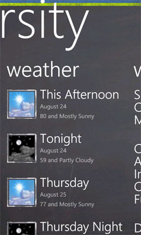

UPDATE 2012-04-12: Fixed an issue with the localization defaults
UPDATE 2011-12-07: UPDATED TO VERSION 2.0
Thanks to some AWESOME help from Rudy Hyun, I was able to incorporate a bunch of new stuff into a new version of the Starter Kit.
The comments have been invaluable - thanks to everyone for posting. I will continue to try to respond as soon as possible to these requests. It would be helpful if you'd post any suggestions on the github site to make it easier for me to track.
UPDATE 2011-11-29: Fixed a bug related to no network available.
The MySchoolApp project is built to allow you to update easily the content and the appearance to match your school. This document steps you through customizing the application. Specifically:
The source code for this starter kit is located on GitHub at the following location:
If you are interested in contributing to the Windows Phone Starter Kit for Schools, please follow the instructions on GitHub for submitting a Pull Request found at http://help.github.com/send-pull-requests/.
While you're here, please check out our other Starter Kits:
Customizing the dynamic content and data sources of the MySchoolApp is accomplished by updating the XML files found in the Data folder. The “Settings.xml” file contains multiple values used throughout the application and the remaining files correspond directly to their respective section of the application.
This XML file provides multiple values used throughout the application. The values of the individual nodes are used in the following manner.
This XML file provides multiple values for the Contacts section on the MainPage. The vales of the individual nodes are used in the following manner.
This XML file provides multiple values for the Links section on the MainPage. The vales of the individual nodes are used in the following manner.
This XML file is setup in the same way as the “Links.xml” and is used to support the “athletics” section on the MainPage.
Customizing the appearance and content of the MySchoolApp is accomplished by providing new graphics and using Visual Studio or Expression Blend.
The title of your application that is displayed when it’s installed on the Windows Phone can be changed by modifying the project properties. To open the properties editor select the Project > MySchoolApp Properties option from the File menu. Change the value of the “Title” fields found under “Deployment options” and “Tile options” to better represent your school name.
The “/Application.png” file is the image displayed next to the application in the installed apps list on the phone. This file must be 62x62 pixels and transparency is supported.
The “/Background.png” file is the image displayed when the application is pinned to the phone start screen. This file must be 173x173 pixels and transparency is supported.
The “/SplashScreenImage.jpg” file is the image that fills the screen, while the application is loading. This file must be 480x800.
As previously discussed in the “Settings.xml” file section, the top two color bands are determined by the values given for the themeColor1 and themeColor2 elements.
The “/Resources/logo.jpg” file is the image displayed in the upper left corner of the MainPage. This file should be at least 160x160 and is automatically clipped to fit within the circle area provided.
The Athletics section could be easily repurposed by simply changing the Header property of the PanoramaItem currently set to “athletics” to another topic. The links in the “Athletics.xml” would then need to be updated to reflect the new topic. As another alternative the Athletics section can be removed by completing the following steps:
athleticsListBox.SelectedIndex = -1;
athleticsListBox.SelectedIndex = -1;
parseLinkFile("/Data/Athletics.xml").ForEach(x => AthleticLinks.Add(x));
parseLinkFile("/Data/Athletics.xml").ForEach(x => AthleticLinks.Add(x));
This section can be used as an alternative to the “map” section in case a BingMapsKey is not available. The “/Resources/campusmap.jpg” file is the image displayed and should be sized be 376x376. The section can be easily removed by deleting the PanoramaItem with the Header property set to “campus map” in the MainPage.xaml file.

Special shout out to Professior Mark Frydenberg, the original developer of the MySchoolApp on which this starter kit was based.